Die Aufmerksamkeitsuhr kennenlernen
Mit dem Begriff „Attention Design“ (oder Aufmerksamkeitsgestaltung) scheine ich einen Nerv getroffen zu haben. Schon wird ein Artikel von mir zitiert und die Idee darin weiterentwickelt. Das Bild der „Aufmerksamkeitsspirale“ gefällt mir.
Statt Ihre Aufmerksamkeit als „abstraktes Gemälde“ zu gestalten, wie ich es zunächst im Sinn hatte, können Sie ihr eine regelmäßige, erwartbare Form geben – und umso leichter Abweichungen von Ihrem Design feststellen. Das erlaubt eine bessere Reflexion über das, was in Ihrem Arbeitsalltag geschieht. Im Guten wie im Schlechten.
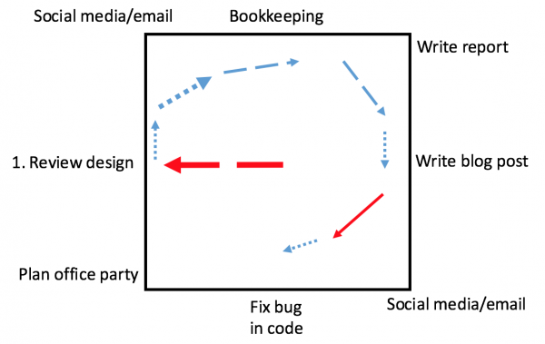
Bei Betrachtung der Beispiele in dem Artikel ist mir allerdings wieder aufgefallen, wie viel ungesagt geblieben ist. Das Thema Aufmerksamkeitsgestaltung ist so viel größer. Attention Design beginnt weit vor jedem noch so spiraligem Gestaltungsplan.
Am Anfang steht ein Haufen von Aufgaben.
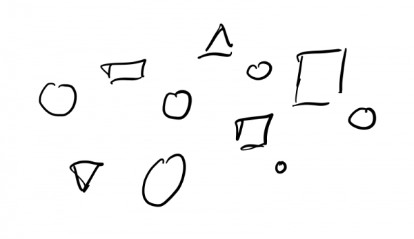
Da müssen Sie erstmal Überblick gewinnen und ordnen.
Dann wählen Sie einige Aufgaben zur Erledigung in einer Periode aus. Ideal ist, wenn Sie ähnliche Aufgaben, oder Aufgaben zu einem Thema oder Kunden zusammenfassen, in Blöcken abarbeiten. Vielleicht wenige für einen einen Tagesplan, vielleicht mehr für einen Wochenplan.
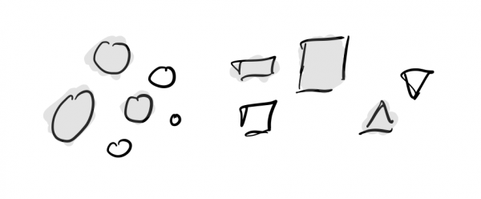
Anschließend priorisieren Sie die ausgewählten Aufgaben:
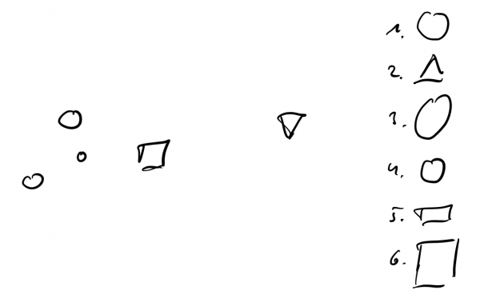
Und von dieser priorisierten Liste nehmen Sie so viele Aufgaben von oben angefangen, wie Sie meinen, in der Priode angehen zu können.
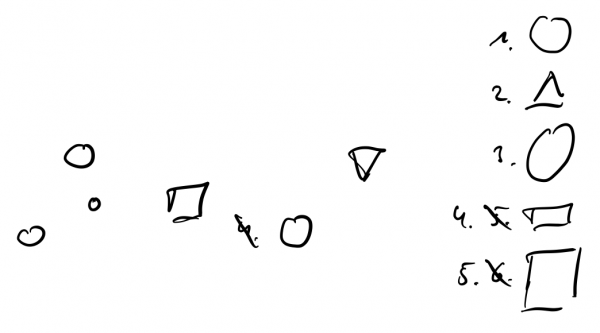
Mit denen können Sie dann eine Aufmerksamkeitsspirale planen:
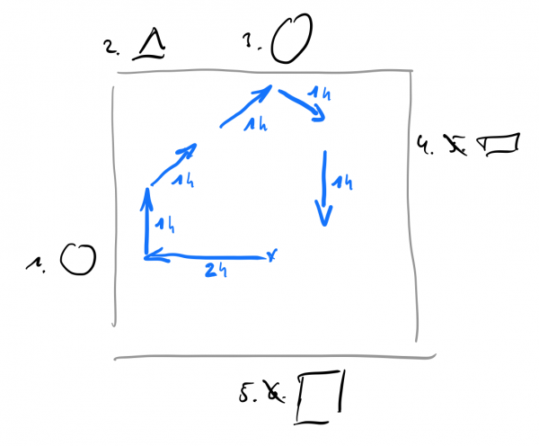
So weit die prinzipiellen Schritte. In der Realität werden Sie manche zusammenfassen oder auch mal überspringen. Das passt schon. Je weniger Sie auf dem Zettel haben, desto größer können Ihre Schritte sein. Je mehr Sie jedoch auf dem Zettel haben, je stärker Ihr Gefühl, Ihrer Aufgabenlast jeden Tag wieder zu unterliegen, desto ausführlicher/kleinschrittiger sollten Sie vorgehen.
Ist doch gar nicht so schwer, oder?
Doch. Leider. Denn in diesem kleinen Prozess, der aus einem ungeordneten Haufen einen knackigen Plan macht, steckt ein Fehler. Es gibt eine Lücke, die es Ihnen schwer machen wird, auszuwählen und zu priorisieren. Beides braucht nämlich einen Maßstab.
Was sind denn Ihre Kriterien, um zu bestimmen, was als nächstes dran sein sollte? Ist es lediglich die Dringlichkeit der Aufgaben. Hinter welcher der größte Schreihals steht, die wird am höchsten priorisiert? Das wäre bitter – wenn auch normal.
Ja, das halte ich für normal. Im Arbeitsalltag wird vor allem das getan, was am dringendsten ist und am penetrantesten eingefordert wird.
Doch damit stecken Sie tief im Reaktionsmodus. Sie reagieren nur noch auf das, was andere Ihnen zurufen. Sie haben Reflexe, mit denen Sie mühsam Bälle in der Luft halten. Verlässlich ist das auch nicht. Entspannt ist das auch nicht. Qualität produzieren Sie auf diese Weise auch nicht.
Aus diesem Arbeitsmodus möchte ich Sie mit bewusstem Attention Design herausholen! Sie sollen ins Agieren kommen. Sie sollen entspannt, ruhig, verlässlich, mit hoher Qualität Aufgaben erledigen und Ergebnisse erledigen.
Ein Traum wäre das, oder?
Keine Sorge, es muss kein Traum bleiben. Das ist machbar. Eine Aufmerksamkeitsspirale – so nützlich sie ist – steht dabei jedoch eher am Ende. Aufmerksamkeitsgestaltung beginnt viel früher. Sie beginnt sogar schon, bevor auch nur eine Aufgabe beginnt, einen Haufen zu bilden.
Die Aufmerksamkeitsuhr
Bevor Sie Ihre Arbeit aufnehmen, müssen Sie festlegen, was Ihre Arbeit überhaupt ist. Wofür bekommen Sie Ihr Gehalt? Was tragen Sie zum Unternehmen bei?
Nehmen wir an, Sie arbeiten im Marketing. Ich bin keine Marketingexpertin, aber ich stelle mir vor, dass Ihr Job dann ist „Marketing machen“ 😉 Dazu gehören Aufgaben wie:
- Markt beobachten
- Markt analysieren
- Kampagne entwerfen
- Kampagne durchführen
- Budgetgespräche
Mit Ausnahme von „Budgetgespräche“ kann man zu jedem Punkt sagen: mehr konzentrierte Aufmerksamkeit darauf ist besser.
Wie viel Zeit sollten Sie auf Ihren Job mit diesen fachlichen Tätigkeiten verwenden? Wie viel Prozent Ihrer Aufmerksamkeit sollte er erhalten? Am besten 100%, oder?
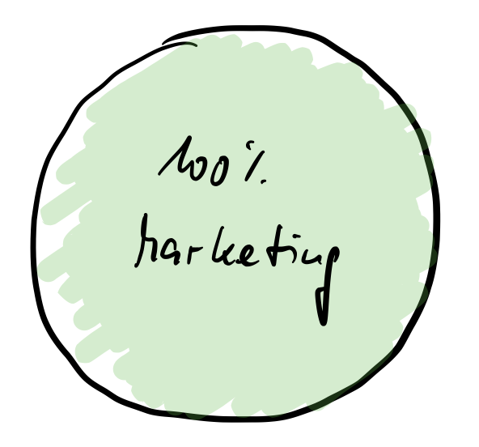
So wünschenswert 100% sein mögen… leider sind sie unrealistisch. Von 40 Wochenstunden werden Sie nicht 40 Stunden auf „Marketing machen“ verwenden können. Und das sollten Sie auch nicht!
In Wahrheit besteht Ihr Job nämlich aus mehr und „Marketing machen“ selbst hat zwei Aspekte, die Sie erkennen müssen.
Nachbesserungen
Ob Sie Marketingexpertin, Buchhalter, Assistent oder Ingenieurin sind, Ihre Fachtätigkeit hat immer zwei Seiten. Die lassen sich nicht vermeiden. Sie sind Mensch und deshalb fehlbar.
Die zwei Seiten jeder Fachtätigkeit nenne ich Produktion und Nachbesserung. Oder auch Wertschöpfung und Korrektur.
Das, was Sie bestrebt sind zu leisten, ist fehlerfreie Produktion. Sie wollen den Markt einfach gleich korrekt analysieren oder den Bericht von vornherein fehlerfrei schreiben. Softwareentwickler wollen keine Bugs einbauen, genauso wie Maurer keine schiefen Mauern mauern wollen.
Aber shit happens. Fehler passieren. Das ist unausweichlich. Hoffentlich sind es wenige – überhaupt keine werden Sie allerdings kaum schaffen.
Dessen sollten Sie sich bewusst sein. Denn Fehler sind sehr, sehr lauthals schreiende Aufgaben. Wenn Sie mit ihnen nicht bewusst umgehen, verwirbeln die Ihnen den ganzen schönen ruhigen Arbeitsfluss.
Die beste Maßnahme gegen Fehler ist natürlich die Vermeidung von vornherein. Doch wenn das nicht klappen sollte, dann ist die zweitbeste Maßnahme die Begrenzung der Zeit, in der Sie sich mit Fehlern beschäftigen. Lassen Sie sich von Fehlern nicht auffressen!
Ausdruck findet dieser Wille zum Selbstschutz darin, dass Sie Ihre Aufmerksamkeit von vornherein teilen. Die Zeit, die Sie auf Facharbeit verwenden, besteht nur zu einem Teil aus Produktion. Ein weiterer Teil sollte explizit der Nachbesserung gewidmet werden.
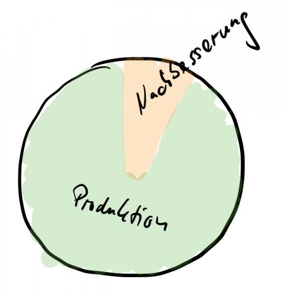
Indem Sie die Nachbesserung grundsätzlich im Blick haben, können Sie sie einerseits zusichern und andererseits begrenzen. Sie wissen, dafür werden Sie Aufmerksamkeit einplanen müssen – doch nicht zu viel. Wenn Sie Korrekturen nicht in Schach halten, verlieren Sie die Fähigkeit zur verlässlichen Produktion.
Aber wie viel Prozent Ihrer Aufmerksamkeit sollte denn nun in Ihre Facharbeit fließen? Ich schlage vor: maximal 70%. Und diese 70% teilen sich in 50-60% Produktion sowie 10-20% Nachbesserung. Wie viel Raum Korrekturen einnehmen können/sollten, hängt von Ihrer Fachtätigkeit ab. In der Buchhaltung sollten es beispielsweise wohl weniger sein als im Marketing und dort weniger als in der Softwareentwicklung.
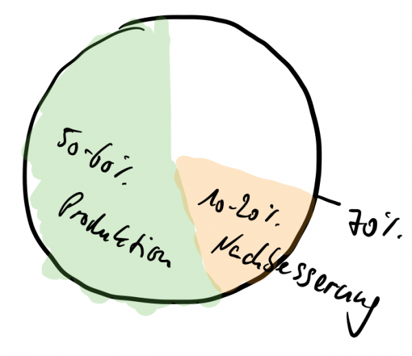
Und wofür die restlichen 30% Ihrer Aufmerksamkeit?
Lernen
Heute gilt: Wer sich nicht weiterentwickelt, der bleibt nicht nur stehen, der fällt sogar zurück. Methoden, Werkzeuge, Rahmenbedingungen ändern sich ständig. Kein Knowledge-Worker ist da ausgenommen. Keine Tätigkeit im Office ist zu gering, um nicht ständig neue Optionen der Umsetzung zu erfahren.
Sich weiterzubilden, zu lernen, am Ball zu bleiben, hat daher höchste Priorität, wenn Sie nicht schleichend Ihre Kompetenz verlieren wollen. Fast möchte ich sogar von einer „ersten Bürgerpflicht“ sprechen.
Sie sind fleißig im Tagesgeschäft. Das ist gut. Weniger geht nicht. Doch die Erfahrung, die Sie dort sammeln, ist keine systematische Weiterbildung. Bis zu einem gewissen Punkt lernen Sie tatsächlich durch schlichte Praxis dazu. Doch an jedem Arbeitsplatz ist das eine im Grunde nur kurze Zeit. Anschließend ist alles „Routine“, wenn auch womöglich schwierig und/oder nervig.
Dauerhaftes Lernen findet nur statt, wenn Sie bewusst lernen. Das braucht eine gewisse eigene Praxis, vor allem jedoch erstmal gezielte Aufmerksamkeit. Sie müssen einen fixen Prozentsatz Ihrer Aufmerksamkeit dem Lernen widmen. Immer.
Ich schlage vor, dass Sie mit 10% Ihrer Aufmerksamkeit beginnen. Die sollte dem Lernen während der Arbeitszeit auf die eine oder andere Art gewidmet sein. Was das genau bedeutet, beschreibe ich an anderer Stelle einmal. Hier nur so viel: Während Sie lernen, dürfen Sie Fehler machen. Und wenn Sie Fehler machen, dann sind das Kontraste, die Ihren Fortschritt beflügeln sollten.
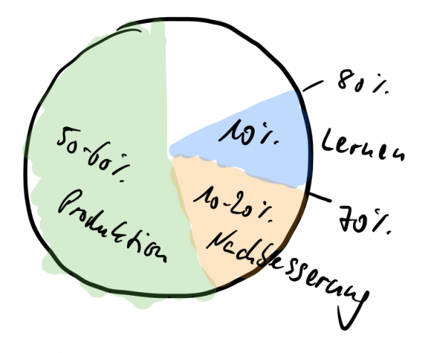
Reflektieren
20% Aufmerksamkeit sind noch übrig. Was tun Sie damit? Sie verwenden einen Teil darauf, zu reflektieren, wie Sie produzieren, nachbessern, lernen.
Wenn Sie heute gut und morgen besser arbeiten wollen, dann gehört dazu nicht nur das Lernen, sondern auch das Beobachten, ob und wie Sie das Gelernte anwenden. Außerdem gehört dazu, dass Sie beobachten, wie Sie überhaupt arbeiten: ist das flüssig, wie viele Fehler machen Sie, wo behindern Sie Konflikte usw. Nur, weil Sie tapfer 70% Ihrer Aufmerksamkeit auf fachliche Tätigkeit konzentrieren, heißt das ja nicht, dass es dort keine Verschwendung mehr gibt.
Einen Teil Ihrer Aufmerksamkeit müssen Sie deshalb dem Nachdenken widmen, wie es ist, warum es so ist und wie es besser werden könnte. Nur dann haben Sie eine Chance, sich zu entwickeln.
Zu professioneller Arbeit gehört also der Rückzug. Ich schlage vor, Sie reservieren dafür 5% Ihrer Aufmerksamkeit. Die können Sie allein zur Reflexion nutzen oder mit Kollegen und Vorgesetzten.
Auch zur einer effektiven Reflexion ließe sich einiges sagen. Doch hier nur so viel: Das ist nicht die Zeit, um Probleme zu lösen, sondern nur, sie wahrzunehmen und Maßnahmen zur Lösung einzuleiten.
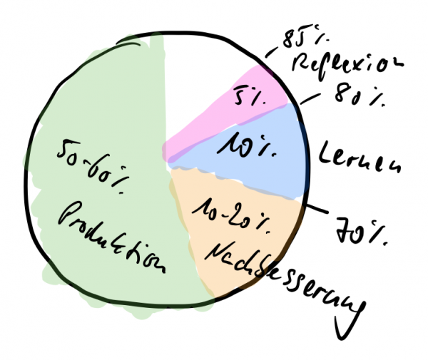
Puffer
Jede Arbeit im Office hat aus meiner Sicht diese vier Aspekte:
- Produktion
- Nachbesserung
- Lernen
- Reflexion
Das ist für mich unverbrüchlich. Wenn Sie die Reflexion vernachlässigen, nehmen Sie Verbesserungspotenzial nicht wahr; wenn Sie das Lernen vernachlässigen, fallen Sie zurück; sind Sie nicht vor allem fachlich tätig, schaffen Sie zu wenig; wenn Sie Produktion und Nachbesserung nicht bewusst ausbalancieren, versinken Sie im Zweifelsfall im Dringenden und vernachlässigen das Wichtige.
Wenn Sie mit diesen Aspekten Ihre Aufmerksamkeit jedoch vollständig beschäftigen würden, wäre Ihre Arbeit immer noch nicht entspannt und hochqualitativ. Sie würden nämlich die einzige Gewissheit im Arbeitsalltag vernachlässigen: Irgendwas ist immer.
Unverhofft kommt oft. Nichts klappt, wie geplant. Das zu ignorieren wäre naiv. Deshalb braucht auch das Überraschende Platz in Ihrer Aufmerksamkeit. Für die Kontingenz reservieren Sie deshalb die verbleibenden 15%
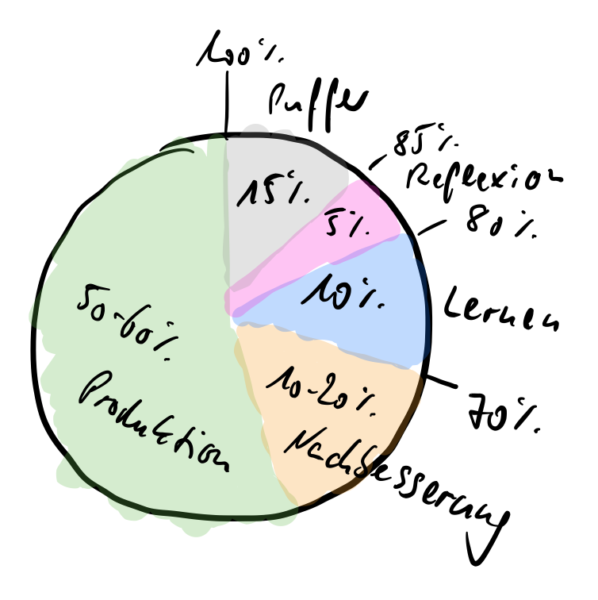
Am Ende haben Sie den Puffer natürlich nicht für aufmerksames Däumchendrehen benutzt. Keine Sorge, den Puffer zu reservieren, bedeutet nicht, Freizeit zu schaffen. Er steht lediglich für ungeplante Ausrichtung der Aufmerksamkeit auf Dinge, die nichts mit den vier Aspekten zu tun haben. Vielleicht brauchen Sie mal mehr Aufmerksamkeit für Korrekturen. Oder sie müssen in einer anderen Abteilung aushelfen. Eventuell ist ein Weihnachtsfest zu planen. Oder der Chef lädt bei Ihnen seine Sorgen ab. Oder sie lernen mal ausgiebiger.
Alles ist möglich. Seien Sie gewappnet!
Mit der „Aufmerksamkeitsuhr“, wie ich diesen Kreis mit seinen nun fünf „Tortenstücken“ nenne, sind Sie das. Die Attention Clock ist Ihr Rahmen, Ihr Nordstern, Ihr Fundament. Daran richten Sie Ihre Entscheidung während des Aufmerksamkeitsgestaltungsprozesses aus.
Ihre Aufmerksamkeitsgestaltung soll mittel- und langfristig die Anteile in der Aufmerksamkeitsuhr widerspiegeln. Nur dann können Sie sicher sein, das grundsätzlich Wichtige nicht aus dem Blick zu verlieren.
Auf die Uhr achten
Die Größe der „Tortenstücke“ ist natürlich nur eine grobe Empfehlung. Wesentlich ist, dass Sie überhaupt anfangen zu differenzieren, worauf Sie Ihre Aufmerksamkeit richten wollen.
Wenn Sie meinem Vorschlag folgen oder die Prozentzahlen für sich anpassen, dann ist es jedoch illusorisch anzunehmen, dass Sie Ihre Aufmerksamkeit jeden Tag auf den Prozentpunkt genau so gestalten können oder auch nur sollten.
Für eine Tages oder Wochenplanung legen Sie gern das Schema zugrunde. Insbesondere ist dabei der Puffer wichtig! Verplanen Sie nicht Ihre komplette Zeit.
Darüber hinaus ist die Aufmerksamkeitsuhr jedoch ein Analyse- und Reflexionsinstrument. Sie definiert, welches Verhältnis Sie auf längere Sicht zwischen den Arbeitsaspekten sehen sollten.
Damit sollten Sie sogar Ihre Aufmerksamkeitsgestaltung beginnen: mit der Beobachtung.
Auch wenn Sie die Idee von Attention Design spannend finden, springen Sie nicht gleich auf den Planungszug auf. Definieren Sie zuerst die Aufmerksamkeitsuhr mit Ihren Prozentzahlen. Anschließend beobachten Sie sich lediglich bei der Arbeit für einige Wochen. Mehr nicht.
Beobachten bedeutet: Sie protokollieren während des Tages oder spätestens kurz vor Feierabend, wie viel Zeit Sie in welchem Arbeitsaspekt verbracht haben. Schreiben Sie die Aufgaben auf, mit denen Sie beschäftigt waren und ordnen Sie sie den Aspekten zu.
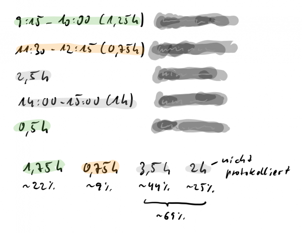
Dann rechnen Sie den Anteil der Aspekte an Ihrer Arbeitszeit aus. Dabei geht es nicht um Minutengenauigkeit. Sie müssen keine kleinteilige Zeiterfassung betreiben.
Bei der Beobachtung gibt es natürlich keinen Puffer mehr. Alles, was nicht Produktion, Nachbesserung, Lernen oder Reflexion ist, kennzeichnen Sie mit „Sonstiges“. Zunächst ist es egal, was konkret in diese Kategorie fällt. Es gehört jedenfalls nicht nur dem, was Sie eigentlich tun sollten.
Hier ein reales Protokoll eines Softwareentwicklungsteams, das es bei Twitter gepostet hat. Ich habe die Aspekte der Aufmerksamkeitsuhr nach meinem Verständnis einmal hinzugefügt:
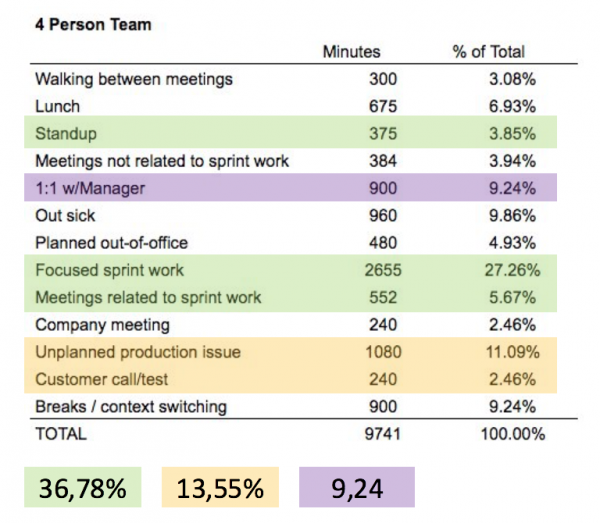
Auffällig ist, wie wenig Produktion stattfindet und dass es kein Lernen gibt. „Sonstiges“ nimmt fast 60% des Tages ein! Kein Wunder, dass man sich dort gefragt hat, wo die Zeit nur geblieben ist.
Ob das die Regel oder nur die Ausnahme ist? Das kann man nur erfahren, wenn man die Beobachtung über einen gewissen Zeitraum konsequent durchführt. Das lege ich Ihnen sehr ans Herz, denn nur so bekommen Sie belastbare Daten für das Gespräch mit Vorgesetzten und Kollegen. Mit einem mehrwöchigen Protokoll können Sie nicht nur belegen, was Sie getan haben, sondern vor allem substanziieren, warum Sie sich überlastet fühlen. Das liegt nämlich meistens nicht daran, dass Sie wirklich zu viel zu tun haben, sondern daran, dass Sie der Produktion zu wenig Aufmerksamkeit widmen.
Wo das Gefühl der Belastung hoch ist, wo man sich wundert, wo die Zeit bleibt, wo man sich geschafft fühlt, ohne schöne Ergebnisse produziert zu haben, da sehe ich dieses Muster:
- Der Produktionsanteil ist deutlich unter 50%.
- Der Sonstiges-Anteil liegt über 25-30%.
- Nachbesserungen – sofern relevant für das Fachgebiet und messbar – liegen über 20%.
- Lernen und Reflexion finden nicht messbar statt.
Dass es so ist, ist bedauerlich. Das zehrt an Ihrer Kraft. Es demotiviert. Dennoch (oder gerade deshalb) ist es wichtig, dass Sie Ihre Aufmerksamkeitsverhältnisse objektivieren und sich diese Situation vor Augen führen.
Zeitmanagement können Sie nicht betreiben. Das habe ich in einem früheren Artikel schon ausführlich erklärt. Aber Sie können beobachten, wie Sie Ihre Zeit ver(sch)wenden.
Achten Sie auf die Uhr! Tragen Sie die Beobachtungen, die Sie innerhalb verschiedener Zeithorizonte machen, gegeneinander auf. Idealerweise kommen Sie dabei der Einteilung Ihrer Aufmerksamkeitsuhr umso näher, je weiter der Zeithorizont ist.
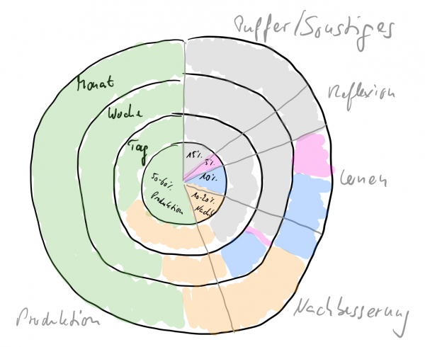
Wenn Sie es morgen nicht schaffen, Ihre Aufmerksamkeitsuhr einzuhalten, ist das kein Beinbruch. Sie können die Abweichung übermorgen ausgleichen. Wenn Sie diese Woche das Ziel noch knapp verfehlen, ist das auch kein Beinbruch. Sie können die Abweichung nächste Woche ausgleichen.
Wie gesagt: nur im Mittel und langfristig sollte Ihre Aufmerksamkeit den Anteilen Ihrer Aufmerksamkeitsuhr entsprechen.
Und die Anteile der Aufmerksamkeitsuhr sollten den Anforderungen an Ihre Fachtätigkeit angepasst sein. Dass dabei jedoch einer der Aspekte für Sie gar nicht relevant ist, halte ich für ausgeschlossen. Wenn Sie Ihre eigene Aufmerksamkeitsuhr gestalten, sollten Sie Reflexion und Lernen daher nicht leichtfertig kleiner ansetzen. Sie würden damit Ihre Fähigkeit kompromittieren, gut zu sein und zu bleiben und sogar besser zu werden, in dem, was Sie tun.
Und nun? Da Sie jetzt „die Uhr gelernt haben“, kennen Sie die Grundlage für jede Aufmerksamkeitsgestaltung. Zu wissen, wessen Ihre Aufmerksamkeit wirklich wert ist, steht am Anfang professioneller Arbeit. Bevor Sie sich aber in tollste Arbeitsplanung stürzen, beginnen Sie nun lediglich mit der Wahrnehmung dessen, was ist. Die Aufmerksamkeitsuhr gibt Ihnen eine Brille an die Hand, durch Sie sie blicken können.
Weitere Artikel

KI als Copilot für die Assistenz
KI in Form von ChatGPT & Co sind hervorragende neue Werkzeuge im Office-Alltag, um produktiver und ja, auch kreativer, zu werden. Neugier statt Angst ist angezeigt im Umgang mit diesen Werkzeugen, die wie andere Werkzeuge auch …

Veränderung braucht Gewohnheit
Sowohl im Berufs-als auch im Privatleben sind wir ständig im Veränderungsmodus. Manche Veränderungen wollen wir umsetzen, manche müssen wir mitmachen. Wir alles wissen, dass Veränderung nie leicht sind und je länger wir etwas auf …